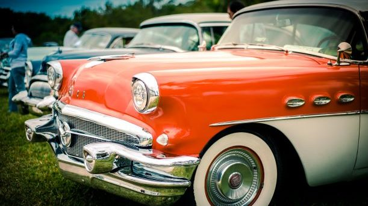

| Thank you for visitng Atwood and Thompson Auto Repair!. We are locally owned Auto Repair and Part replacement shop, located in Kirkwood, Missouri. We were founded in 1999, when founders Noel Atwood and Julius Thompson decided to open a auto store together. Since then we have expanded and provided service to over 10,000 people and we are so very
proud and thankful for all of our customers support over the years. Here at Atwood and Thompson, we try to only provide the best service for vehicles of all years.This comes from Thompsons interest in vintage cars as a kid he has taken this passion along with his friend and grown that into a thriving community.
If there is anything that we can help you with, please feel free to reach out and we will be more than happy to help, just reach out to us on the Contact Us page!.
If like Thompson, you have an interest in vintage cars, come down and interview!, we are always looking for fellow car enthusiasts to enjoy the hobby with. |
|
 |